Bicycle Frame Structural Optimization
FEA-driven redesign of an e-bike frame focused on accessibility, structural performance, and lightweight optimization.
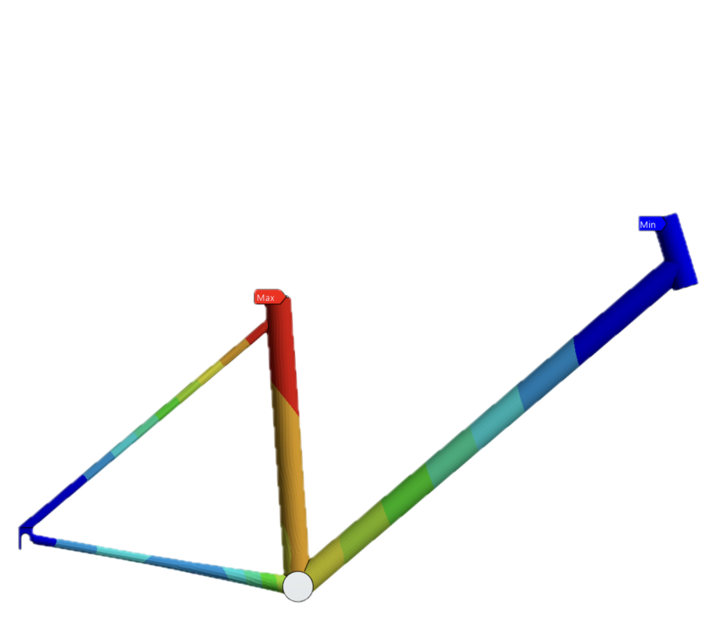
Intro
This project focused on the structural redesign and optimization of an aluminum bicycle frame for an e-bike bike share application using finite element analysis (FEA) in ANSYS. The primary design objective was to improve accessibility and usability through a step-through frame geometry while maintaining acceptable structural stiffness, strength, and safety under realistic user and battery loads.
The project explored how geometric modifications influence load paths, deformation, and stress concentrations throughout the frame structure. Starting from a baseline bicycle frame geometry, iterative design changes were evaluated through shell-based finite element simulations and parametric optimization studies to balance accessibility, weight, and structural performance.
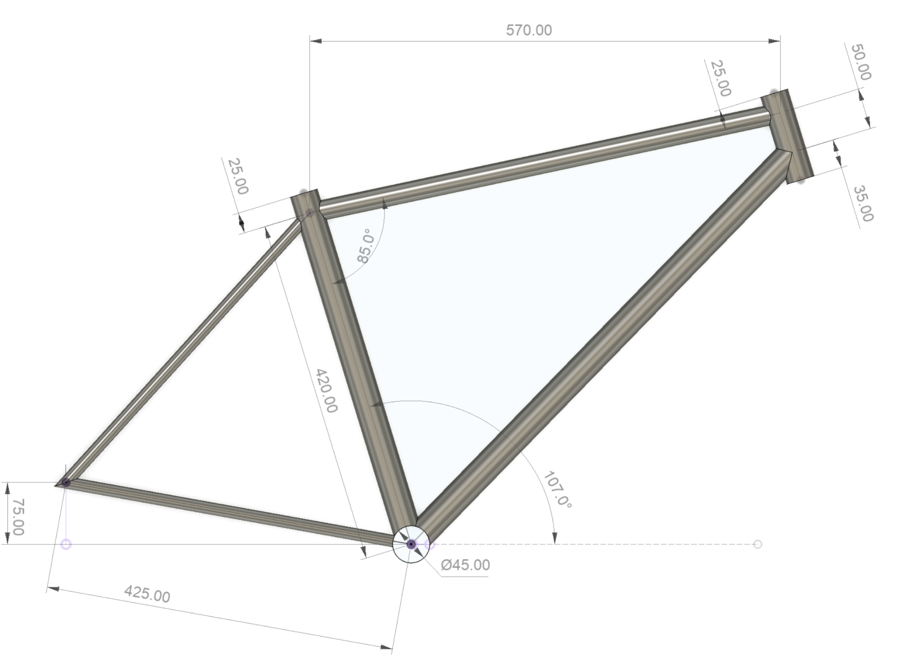
Design Objectives and Constraints
The frame was designed specifically for a public bike share application, where usability, durability, manufacturability, and safety become important design considerations. Unlike a traditional bicycle frame, the design also needed to support the additional weight of a battery system while remaining lightweight and accessible to a wide range of users.
A major design objective was the removal of the top tube to create a more accessible, step-through geometry. While this significantly improved user accessibility, it also removed one of the primary structural load paths within the frame, reducing overall stiffness and altering how loads were distributed through the structure.
The redesigned frame therefore required geometric refinement to recover stiffness, maintain acceptable stress levels, and adhere to safety factors at or above 2.
Mathematical Model and Numerical Solution Strategy
The bicycle frame was modeled using shell elements to efficiently represent the thin-walled tubular structure while accurately capturing bending and axial loading behavior. Because the tube wall thickness was small relative to tube diameter, shell modeling provided an efficient alternative to full, solid-body meshing while still giving a strong structural response.
The frame material was modeled as an aluminum alloy with an initial tube thickness of 2 mm for the baseline geometry.
Finite element simulations were performed in ANSYS Mechanical using shell meshes with characteristic element sizes of 3 mm. Additional refinement was applied near geometric details such as the rear dropouts and bottom bracket to better capture local stress concentrations.
Boundary conditions were selected to approximate realistic rider loading and frame constraints. Fixed supports were applied on the rear dropouts and steering tube, while external loads representing rider weight and operational forces were applied on the seat tube (700 N) and bottom bracket (150 N) regions. Structural response was evaluated using total deformation, equivalent stress, and safety factor results.
Initial Geometry and Baseline Results
The baseline frame geometry used a conventional triangular frame layout. Initial simulation results showed a maximum deformation of approximately 0.11 mm concentrated near the seat tube, where the applied rider loading produced bending through the center of the frame.
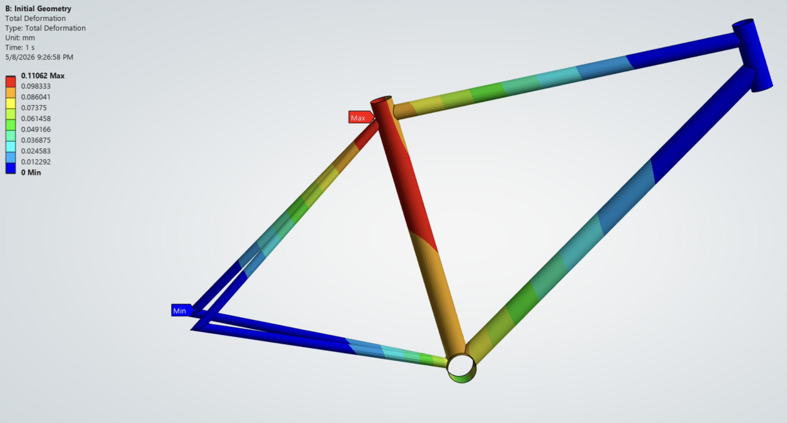
Equivalent stress contours revealed peak stresses of approximately 56.8 MPa near the bottom bracket and seat tube junction, where loads from multiple tubes were transferred through a relatively small geometric area.
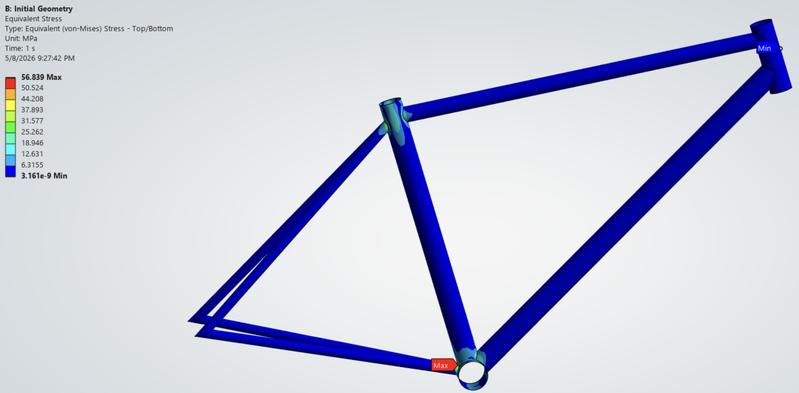
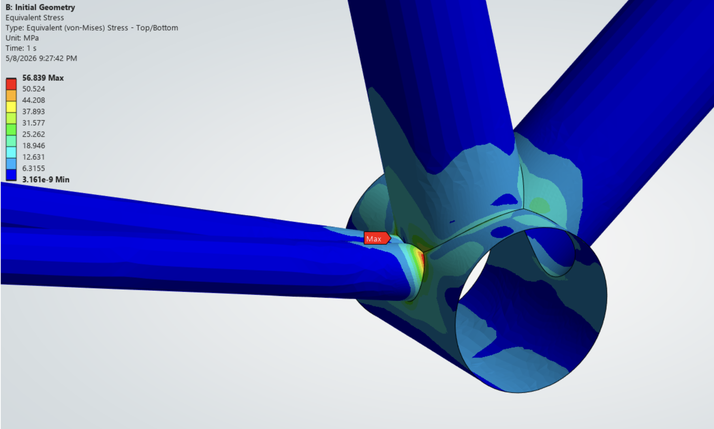
The initial frame exhibited a minimum safety factor of approximately 4.93, indicating acceptable structural performance while also identifying regions that could benefit from further refinement.
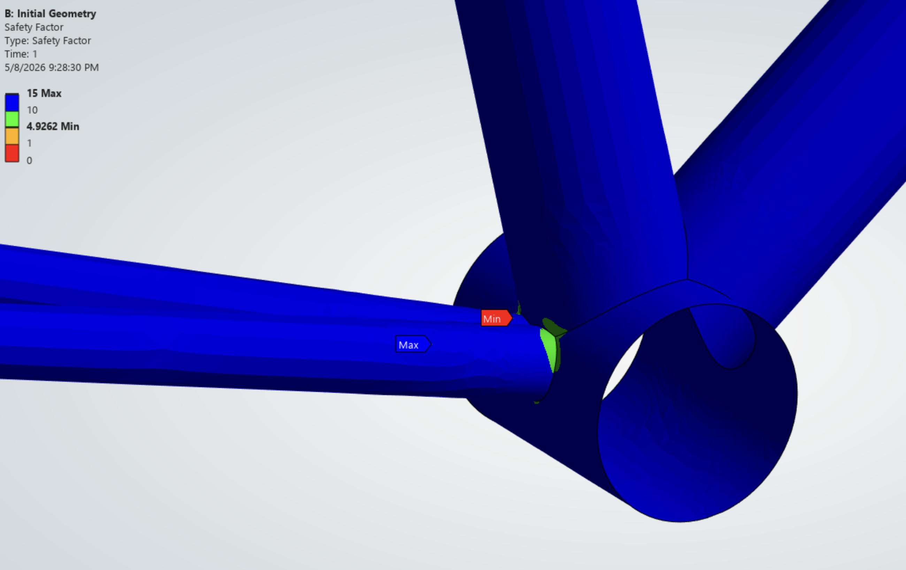
Mesh convergence studies were also performed to verify that deformation and stress predictions remained stable across multiple mesh densities, increasing confidence in the simulation results.
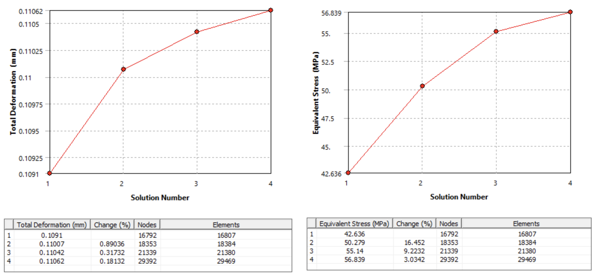
Refined Step-Through Design
The redesigned geometry introduced a step-through frame intended to improve accessibility for riders. Removing the top tube significantly altered the structural load paths within the frame and reduced overall stiffness, requiring changes to other members.
To recover stiffness and improve the load transfer, several geometric modifications were introduced. The seat tube and head tube were repositioned to create a more upright frame geometry and increase internal space for the battery system. The down tube angle was also reduced to create a more direct structural load path for supporting the battery load.
Critical tube diameters, including the seat tube, down tube, and head tube, were increased from 35 mm to 40 mm to improve stiffness and reduce localized stresses. The chain stays were redesigned using tapered geometry, increasing diameter near the bottom bracket to 30 mm while maintaining the 15 mm diameter toward the rear dropouts to balance stiffness, manufacturability, and weight.
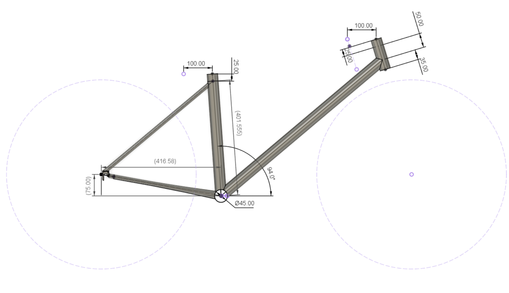
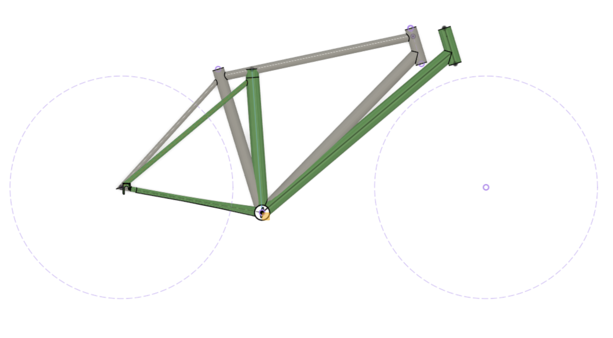
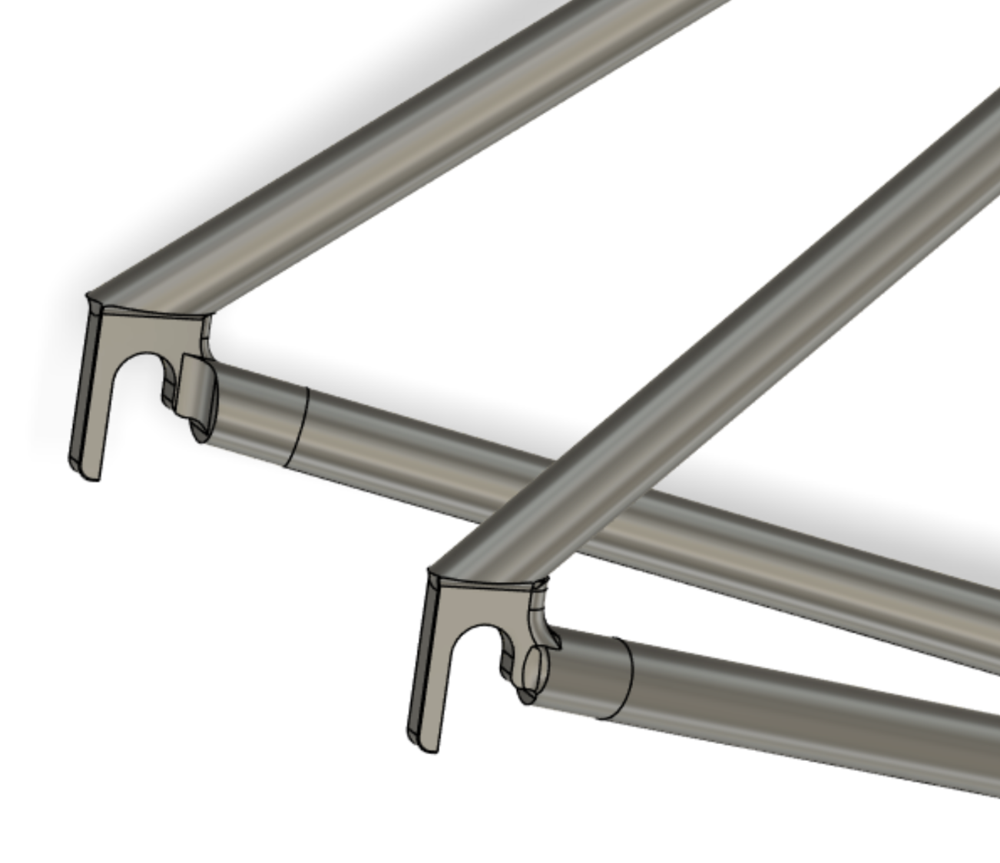
Refined Design Results
The refined frame geometry was evaluated using the same finite element workflow and loading conditions as the baseline model to allow direct comparison.
Results showed that maximum deformation increased from approximately 0.11 mm to 0.21 mm. This increase in deformation remained relatively small considering the substantial geometric change and improved accessibility of the frame.
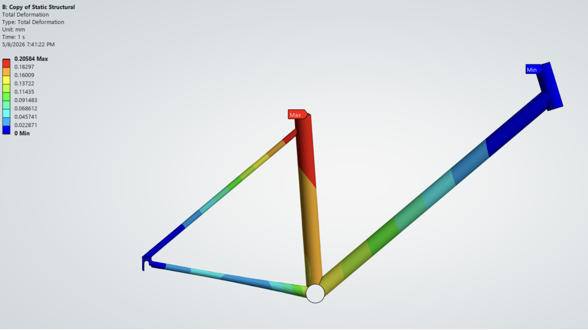
Equivalent stress results showed only a minimal increase in peak stress despite the altered load paths and additional battery loading, increasing from 56.8 MPa to 57.0 MPa. Peak stresses remained concentrated near the bottom bracket and chainstays, which continued to act as the primary load transfer locations within the frame.
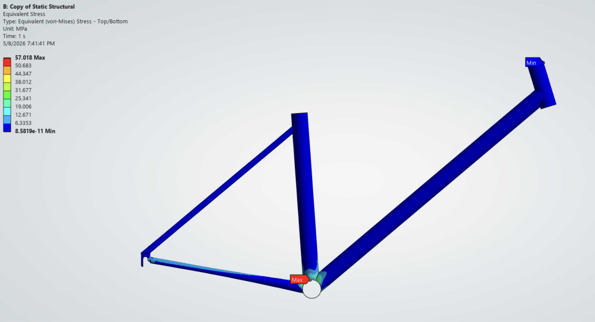
The minimum safety factor remained above 4.9 throughout the refined frame, confirming that the redesigned geometry maintained acceptable structural safety while achieving the desired usability improvements.
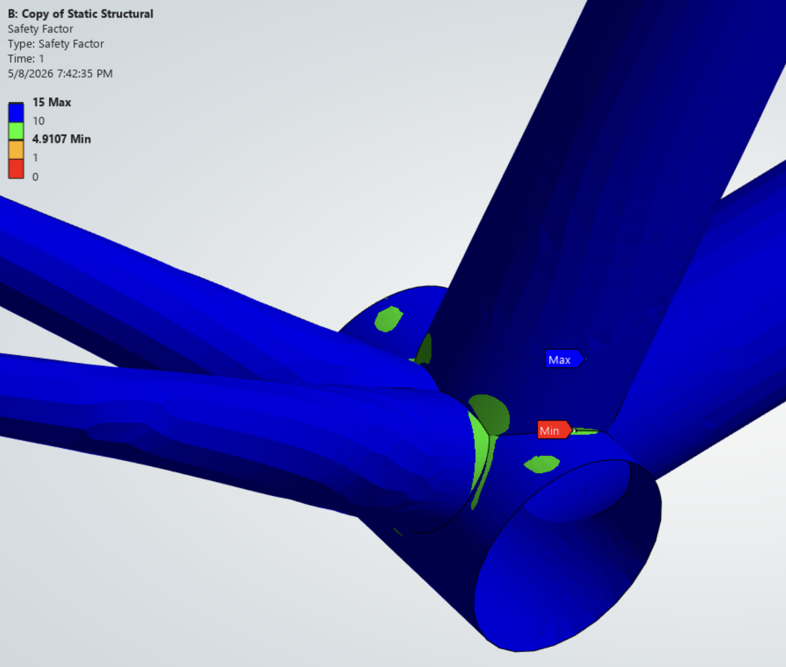
Mesh convergence studies were again performed to verify deformation and stress predictions.
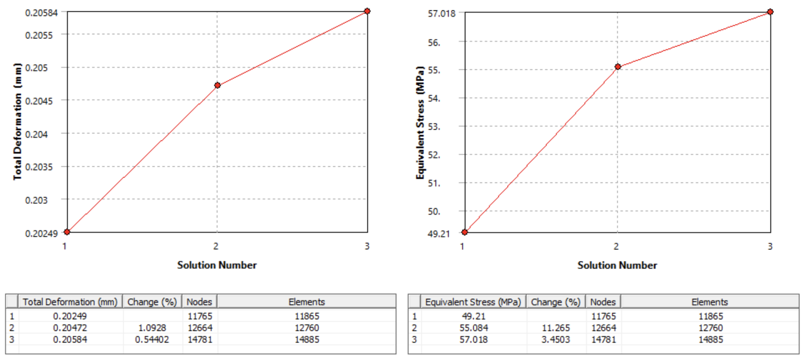
Parametric Optimization
A parametric optimization study was performed to further reduce structural mass while maintaining acceptable safety margins. Tube thickness was selected as the primary design variable, while minimum safety factor served as the primary design constraint.
Response surface optimization in ANSYS Mechanical was used to evaluate how tube thickness influenced both structural mass and minimum safety factor across multiple design iterations. All tubes were studied together using a shared thickness parameter. The optimization demonstrated an approximately linear relationship between thickness and safety factor, showing that relatively small increases in tube thickness could significantly improve structural performance.
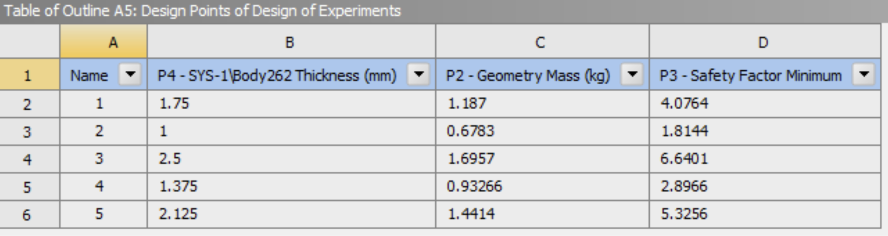
The study identified that thickness values slightly above approximately 1.05 mm satisfied the required safety factor constraint. This process demonstrated how simulation-driven optimization can be used to fine-tune structural performance while balancing other objectives such as weight, stiffness, and safety.
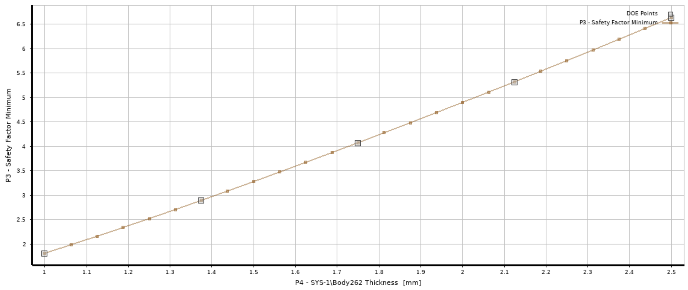
Conclusion and Reflection
This project demonstrated how finite element analysis can guide iterative mechanical design by balancing accessibility, stiffness, strength, and weight. The redesign process highlighted how even relatively simple geometric changes can significantly alter structural load paths and overall frame behavior.
One of the most valuable aspects of the project was learning how simulation assumptions, including shell modeling, boundary conditions, and mesh refinement, directly influence engineering results and design decisions. The project also reinforced the importance of optimization and iterative refinement in structural design, where small parameter adjustments can largely improve performance without requiring major geometric redesigns.
Overall, the project provided experience in simulation-driven product development, combining CAD, FEA, structural optimization, and engineering decision-making.
Next Steps
There are several further opportunities to improve both the accuracy of the simulation model and the structural efficiency of the frame design. One improvement would be implementing remote boundary conditions to better represent how rider forces are transferred through the crank arm and pedal system into the bottom bracket region. The current model applies simplified forces directly to the bottom bracket, which does not fully capture realistic pedaling load and moments.
Another area for future refinement would be to expand the parametric optimization study beyond a single, uniform thickness parameter. Instead of scaling all tube thicknesses together, future optimization could vary individual tubes independently to better tailor stiffness and strength throughout the structure. This would allow localized reinforcement only where structurally necessary to further reduce frame mass while maintaining acceptable safety factors.